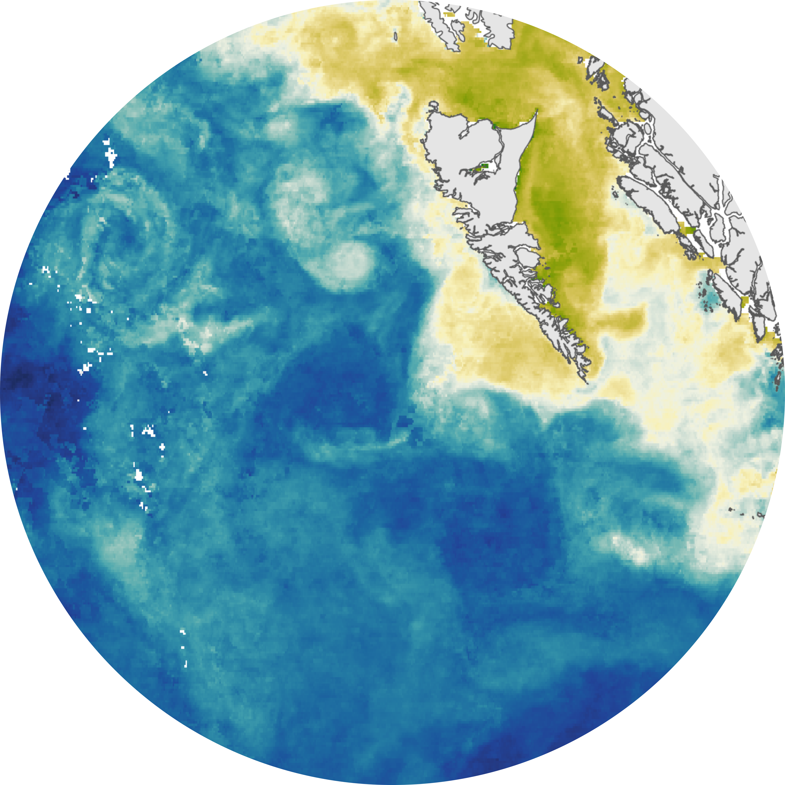
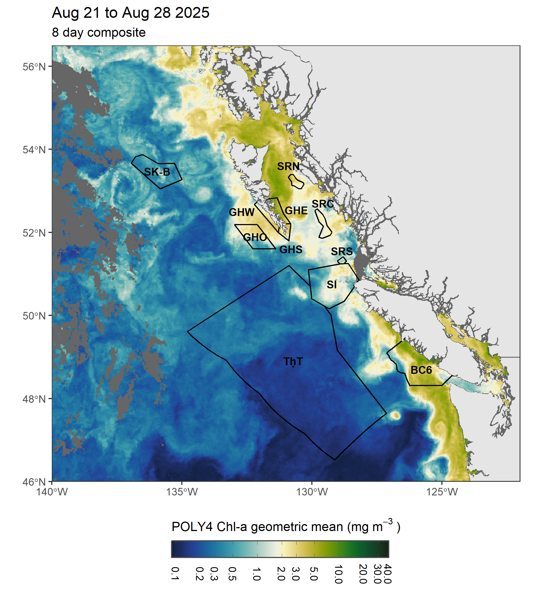
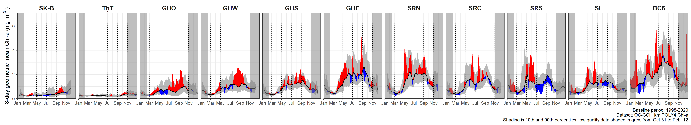
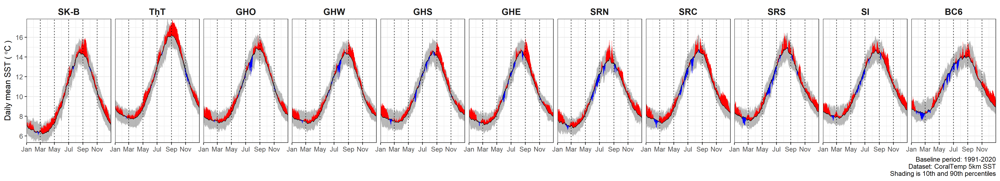
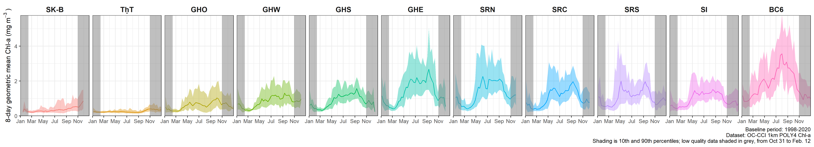
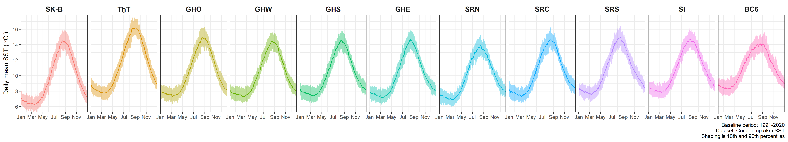
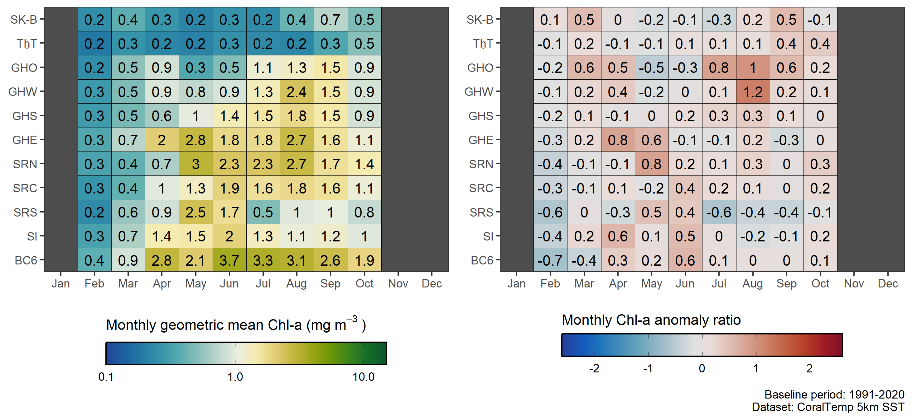
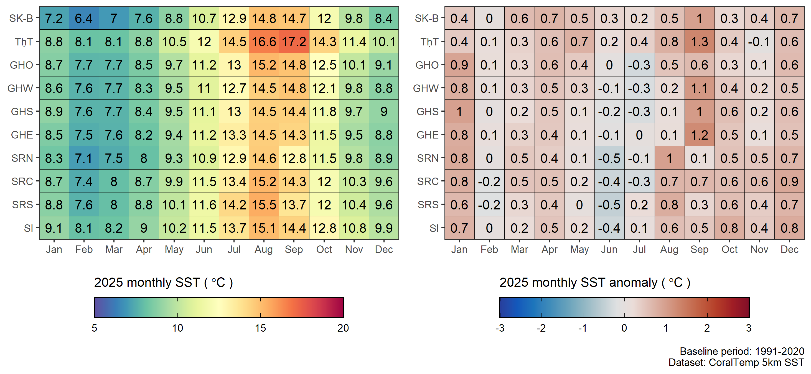
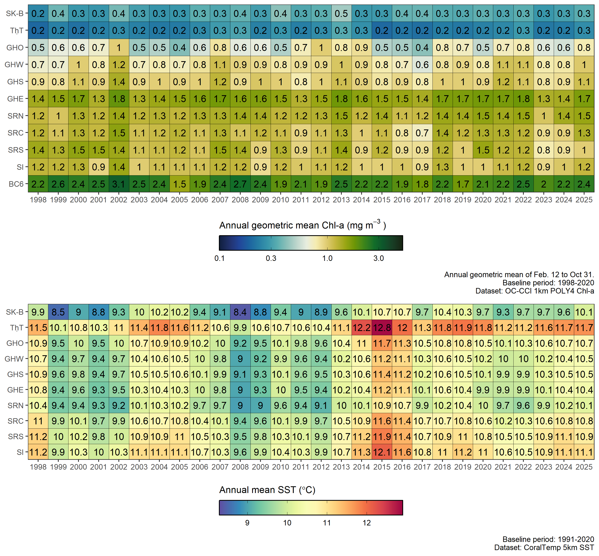
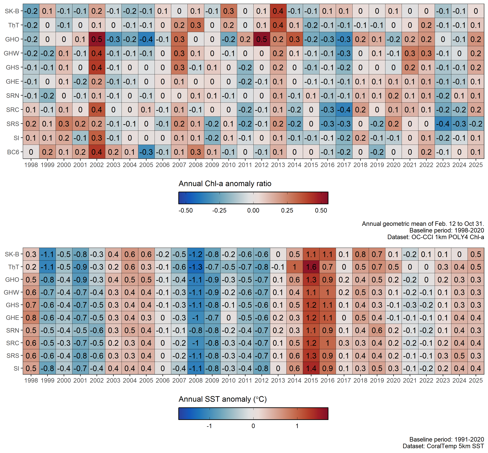

Satellite sea surface temperature and chlorophyll-a in the Northeast Pacific
The ocean can be monitored at wide spatial scales using sensors on satellites. Satellites revisit much of the global ocean at least once per day, and data records now span decades. This allows scientists to look at long-term changes in the ocean. Satellite data can also be acquired from locations that cannot often be visited by ships, or autonomous sensors like gliders (see Ross et al. 2025) or Argo floats.
Sea surface temperature (SST) is one variable that satellites effectively measure, during both daytime and night-time. Night-time SST is often used for analysis over the longer term, as it does not have diurnal heating, or the daily effect of the sun warming the surface of the water. SST records are useful for monitoring ocean heat events like Marine Heatwaves (MHWs) (you can find more information and recent data for the Pacific region at this link).
Chlorophyll-a (Chl-a), another parameter that satellites effectively measure, is the dominant pigment in phytoplankton. Phytoplankton, tiny plants that are found throughout the ocean, provide food to thousands of marine species, and make a large proportion of the world’s oxygen through photosynthesis.
{kind=link}

Surface chlorophyll-a concentration, measured using satellites, used to approximate the concentration of phytoplankton in the upper ocean. Image prepared by the authors.How to use this site
This site updates monthly with maps and figures of SST and Chl-a, for monitoring their anomalies and values over the course of the year along the BC coast. Monitoring regions include Marine Protected and Conserved Areas, which supports reporting for Canada’s Marine Conservation Targets (MCT):
BC6:
GH: East (GHE), Offshore (GHO), South (GHS), West (GHW) Gwaii Haanas National Park Reserve, National Marine Conservation Area Reserve, and Haida Heritage Site
SR: Central (SRC), North (SRN), South (SRS) Hecate Strait/Queen Charlotte Sound Glass Sponge Reefs MPA
The data is available here.
For more information on MCT and MPAs, a comprehensive summary is also available in the latest version of The Current (pdf here📰).
Chl-a and SST in 2025





Monthly summaries and anomalies
Below, are monthly averages of chlorophyll-a (Chl-a) and sea surface temperature (SST) by region (left), and their anomalies compared to baseline monthly conditions (right).
In 2025, many regions had higher than normal Chl-a. For GHE and SRN, this was during April and May, while in GHO and GHW, during July and August. SST was generally warmer than normal, except in February in more southern regions, in June, and in many regions during July.


Annual summaries and anomalies
When averaged annually, overall changes in Chl-a and SST from year-to-year become more evident. Regional Chl-a shows the phytoplankton biomass differences between the offshore regions (SK-B and TḥT), which have low biomass, compared to the remaining regions mainly located on the shelf. GHE and BC6 have the highest phytoplankton biomass overall.
SST shows the impact of “the Blob” Marine Heatwave event that began in 2014 and ended in 2016. This event had widespread negative effects on Northeast Pacific ecosystems, from phytoplankton to whales and sea lions. Over half of Alaska’s common murres died during this event (Renner et al. 2024), there were widespread hamful algae blooms (Zhu et al. 2017), and record numbers of sea lions were starved and stranded.

Chl-a and SST anomalies, where a given value is compared to its long-term average, differ more greatly from one another. SSTs, since late 2013, have largely been comparable to, or higher than, their long-term average. SST is typically closely related to El Niño–Southern Oscillation (ENSO), a natural climate phenomenon where winds and SSTs cyclically vary in the tropical Pacific. In the Northeast Pacific, El Niño years tend to be warmer than normal, while La Niña years tend to be cooler and wetter. However, in recent years, the cooling effects of La Niña have been less significant.

Further reading
We provide summaries of SST and Chl-a at the annual State of the Pacific Ocean (SOPO) meeting and published as a series of technical reports. The most recent SOPO meeting was held in March, 2026, with a technical report to be published in the coming months. For broader reading about the State of the Canada’s Oceans, check out the Canada’s Oceans Now report. 🌊🐟
Recent SOPO publications:
References
Citation
@online{hilborn2026,
author = {Hilborn, Andrea and Hannah, Charles and Guan, Lu},
title = {Satellite Sea Surface Temperature and Chlorophyll-a in the
{Northeast} {Pacific}},
date = {2026-03-18},
url = {https://schckngs.github.io/Pacific_Satellite_Monitoring/},
langid = {en-CA}
}